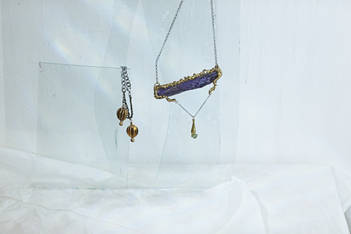
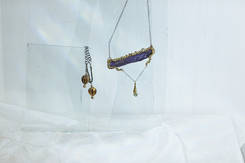

Творчество
Это так скучно — ювелирные украшения — от этих слов я хочу уснуть. Я никогда не хотел заниматься ювелиркой, это как быть заживо погребённым. А вот произведения искусства на руках — это совсем другое дело.
Александр Ольховский
фотограф: Кирилл Арсеньев
Первая съемка коллекции появи- лась в 2014 году. Видно, насколько она отличается по стилистике от нынешних. Вполне логично, что при запуске бренда был сделан акцент на самих украшениях. Многочислен- ные фактуры, природные формы подчеркивают самобытность и при- родные истоки самих украшений. Всё в целом образует гармоничный натюрморт, с действительно мёрт- вой природой, представленной в виде гниющих фруктов и овощей.
2014 ОСЕНЬ / ЗИМА
 
фотограф: Люся Жаркова
Благодаря талантливому фотографу Люсе для MW в 2015 году появи- лась первая непредметная съемка. Она является очень характерной по атмосфере и духу самого бренда. Принципиально отсутствие какого- либо «fashion» в данной съемке и всех последущих. Девушки, запе- чатленные в украшениях, без маки- яжа, маникюра и прочего украша- тельства, которое встречается в стандартных съемках ювелирных коллекций. Всё это созвучно с укра- шениями, они созданы из простых материалов, но их эстетика и уни- кальность завороживает.
2015 ВЕСНА / ЛЕТО
фотограф: Екатерина Туркина модель: Анастасия Третьякова
Осенне — зимняя коллекция была снята в полузаброшенной подмос- ковной усадьбе Горенки. Во второй половине XVIII — начале XIX века прекрасная усадьба принадлежала семье графов Разумовских. На соз- дание этой коллекции украшений художников вдохновила тема ста- рых графских развалин, контрастное сочетание изящных коринфских капителей с брутальностью полураз- рушенной обнаженной кирпичной кладки. Данные фактуры были переосмыслены в соврменной реальности и воплощены в неверо- ятные и причудливые формы укра- шений, достойные современных графов и графинь.
2015 ОСЕНЬ / ЗИМА
фотограф: Алиса Донова модель: Аня Павлова
Небольшая капсульная коллекция,
созданная под впечатлением от
путешествия на Черное море. Не
просто так это морская коллекция:
украшения в основном состоят
из кораллов, обломков ракушек,
дополненных бирюзой и камнями,
привезенными из поездки. Нео-
бычные украшения словно бы соз-
даны самой природой, будто бы
волны выплеснули их на берег во
время прилива. Стилистика съемки
подчеркивает морскую тематику.
Приглушенные тона, отблески воды,
кораллы, модели, которые никогда
не появляются целиком, создают
таинственный образ подводного
мира, который и в наше время
остается загадкой для человека.
2016 ВЕСНА / ЛЕТО

фотограф: Алиса Донова модель: Аня Павлова
Необычно снятая и обработанная коллекция создана под впечат- лением от фильма Сияние, снятого Стэнли Кубриком. Съемка передает эмоции, испытанные во время просмотра. С одной стороны — невероятно красивая картинка, с другой стороны — растущая по мере развития сюжета тревога. Девушки, облаченные с головы до ног в глухие плотные ткани, с обнаженными руками смахивают на персонажей из фильмов ужасов. А приглушенный свет и шум нагне- тают атмосферу тревоги, создавая впечатление, что фотограф сам попал в сцену из фильма, и сумел на телефон заснять персонажей.
2016 ОСЕНЬ / ЗИМА
капсульная коллекция к выставке
Луиз Буржуа в Garage
Браслеты, кольца, серьги, броши и колье, всем своим видом напо- минающие о творчестве Буржуа — совместный проект команды с музе- ем Garage. Коллекция показывает, как искусство проникает в моду, порой меняя наши взгляды на уже привычное. Элементы, характерные для искусства Луиз Буржуа (а для нее творческие практики всегда оставались аналогом бесед с пси- хологом), прослеживаются в выб- ранных художниками формах.
2016 ЯНВАРЬ
модель: Кира Пиевская фотограф: Женя Музалевский
Необычная для коллекция — из серебра с фианитами и аме- тистами. Изящные и минималис- тичные украшения созданы словно бы из костей несуществующих животных. Вся съемка сделана на белом стерильном фоне, девушки — модели облачены во все белое, максимально простое и чистое. Создается образ сравнимый со сте- рильной секретной лабораторией, где нет места чему-то показному и вычурному. Именно поэтому на девушках нет совершенно никакого макияжа, они показаны во всей естественной красоте.
2017 ВЕСНА / ЛЕТО
модель: Кристина Арсеньева фотограф: Екатерина Туркина
В основу коллекции лёг камень
пирит, который присутствует в боль-
шинстве украшения. Этот необыч-
ный минерал также называют золото
дураков. Из-за его внешней
схожести с золотом во времена
золотых лихорадок его часто с ним
путали. Но у пирита есть удивитель-
ное свойство, которое отсутствует
у золота — он высекает искры при
ударе, за что он и получил свое
название pyrites lithos — камень,
высекающий огонь. Еще одна
особенность — кубическая струк-
тура минерала, которая делает
украшения с ним очень эффектными
и необычными.
2017 ОСЕНЬ / ЗИМА
модель: Наташа Ермакова фотограф: Елизавета Грачева
Коллекция созданна к открытию нового магазина Амперсанд, созданного Mineral weather и 5 другими дизайнерами укра- шений. Магазин был открыт еще в 2016 году, однако в 2018 он переехал в новое помещение, которое художники смогли офор- мить сами, в результате чего было создано невероятно красивое, уютное и необычное пространство для творческих людей. Съемка коллекции проходила в новом помещении магазина.
2018 ВЕСНА / ЛЕТО

Саша: С Аней мы познакомились в моей студии на Арме в 2010 году — и через год создали Mineral Weather. Я учился на теле- визионного инженера, работал пять лет в новостях, сутки через трое, куча свобод- ного времени была. Было время творить. Название было придумано в аппаратной программы Время ещё в 2009 году, тогда я сделал кучу наброс-ков в блокноте. Название вообще никак не связано с ми- нералами — оно, скорей, про минеральную воду. Я даже придумал рекламу, которую мы пока так и не сделали: девушка открывает бутылку минералки, а на ней этикетка Mineral Weather. Всю жизнь считал себя художником, смотрел в детстве видео Марата Ка по телеку, кучу всего рисовал, но не учился никогда в сфере искусства, кроме курсов МАРХИ.
Аня: Я закончила керамику в МГХПА имени Строганова в 2014 году. Шесть лет там училась и постоянно была по уши в глине. Когда мы с Сашей встретились, стало сразу же понятно, что нам нужно делать что-то вместе. Я владела техникой и знанием технологий, а у Саши был беско- нечный поток идей и энергии. После того как студия на Арме распалась, Саша пытал- ся придумать какое-то дело, которое бы могло помочь самовыражаться и приносило доход. Ювелирка казалась максимально компактным занятием. Не было денег снимать помещение, работать приходилось дома. Саша тогда лепил смешные кольца из пластилина, потом начал интересоваться технологией, купил воск специальный ювелирный, подсунул мне его, сказал: «Делай — у тебя получится».
История
Дуэт художников-алхимиков Александра Ольховского и Анны Павловой постоянно экспериментирует с матер- иалами и творит свою «погоду» из необработанных кам- ней, природных металлов, гипса, цемента, пластика. У марки цельный стиль, но пытливый взгяд найдет раз- ницу. Анины работы — нежные, аккуратненькие цветочки; ее руками сделана вся керамика, в том числе фарфоровые елочные игрушки в виде персонажей «Теремка», броши. На Сашиной совести более брутальные вещи: все украшения с камнями, серьги-сперматозоиды. Место для своего шоурума они выбрали удивительно похожее на свои украшения. На территории завода НИИДАР снимают помещения, офисы и производства, но то, что вы ищете, снаружи напоминает пещеру горного короля. Внутри сполна виден талант MW преобразовывать куски беспри- зорного вещества в дикую красоту: строительный мусор складывается в интерьерные решения. Первые кольца Mineral Weather художники делали в гараже, устроив в нем литейный цех. Все начиналось с алюминия и керамики, потом появились камни и оловянная бронза.